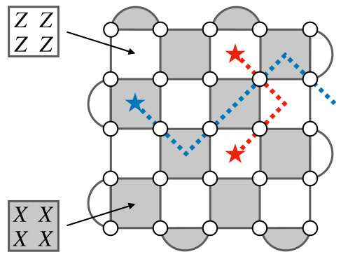

Quantum error correction with the surface code
Rough overview (in words)
To protect quantum information from detrimental effects of noise, we can encode it into a code space of some quantum error correcting (QEC) code [1, 2]. Oftentimes, we choose to work with stabilizer codes [3]. By definition, a code space of a stabilizer code is the simultaneous \((+1)\)-eigenspace of a set of commuting Pauli operators, commonly referred to as parity checks.
The surface code [4, 5, 6] is one of the most-studied stabilizer codes. It can be implemented with a planar layout of qubits and entangling gates only between neighboring qubits. For that reason, the surface code is particularly appealing for quantum hardware architectures with restricted qubit layout and connectivity, such as superconducting circuits [7, 8]. The most common realization of the surface code uses \(n = L^2\) data qubits to encode \(k=1\) logical qubit and has code distance \(d=L\), where \(L\) is the linear size of the \(L\times L\) square lattice with open boundary conditions. Additionally, \(n_A = L^2 -1\) ancilla qubits are used to measure parity checks; see Figure 1(a).
Figure 1(a): A planar layout of data and ancilla qubits (white and yellow dots, respectively) with entangling gates (green edges) only between neighboring qubits. This layout gives rise to the \(L\times L\) square lattice with open boundary conditions, where \(L=5\) here.

Figure 1(b): The surface code can be realized by measuring Pauli \(Z\)- and \(X\)-type parity checks (light and dark faces, respectively). The error syndrome (red and blue stars) can be interpreted as the endpoints of string-like Pauli \(X\) and \(Z\) errors (red and blue dashed edges, respectively).
In order to perform QEC, we have to be able to detect errors without revealing the encoded information. For stabilizer codes, we can achieve that by measuring their parity checks to obtain the error syndrome (which comprises the measurement outcomes returning \(-1\)). Then, the error syndrome is processed by specialized classical algorithms, also known as "decoders," to find an appropriate recovery operator that attempts to remove errors afflicting the encoded information. For generic stabilizer codes, the problem of optimal decoding is computationally hard, even for simple noise models [9]. However, for QEC codes with some underlying structure, such as the surface code, there exist a variety of computationally efficient (albeit not optimal) decoding algorithms. In particular, the three most popular classes of decoders for the surface code are as follows.
- Matching decoders, including the minimum-weight perfect matching algorithm [6] and its follow-up improvements, such as the belief-matching algorithm [10]. These decoders phrase the problem of surface code decoding as a graph-theoretic problem of perfect matching, which can be efficiently solved [11].
- Clustering decoders, such as the renormalization-group decoder [12, 13] and the union-find decoder [14]. These decoders primarily exploit the structure of the error syndrome in the surface code; see Fig. 1(b).
- Tensor-network decoders [15, 16, 17]. These decoders phrase the the problem of surface code decoding as a numerical problem of contracting tensor networks.
In order to assess the usefulness of decoders, one usually considers two criteria: runtime and performance. The first criterion, runtime, is defined as the time needed for the decoder to process the error syndrome. It is crucial that any practical decoder is able to operate at the rate compatible with the rate of parity check measurements; otherwise, the error syndrome will start to accumulate, leading to the backlog problem [18]. The second criterion, performance, is typically defined for a given noise model in terms of the logical error rate, i.e., the failure rate of the decoder to successfully undo the effects of noise on the encoded information. From the perspective of reducing runtime and improving performance, matching and clustering decoders stand out. Namely, they can achieve almost-linear runtime [19, 14], and their performance is close to optimal. To achieve optimal performance, one can use tensor-network decoders, however they are often not computationally efficient, with runtime that scales unfavorably.
Rough overview (in math)
In addition to being compatible with planar layouts of qubits and admitting computationally efficient decoders with good performance, the surface code also exhibits one of the highest QEC thresholds. Recall that a QEC threshold is specified for the following triple: a QEC code family of growing distance \(d\), a decoder and noise model. It is defined as the highest value \(p_\text{th}\) such that for any error rate \(p< p_\text{th}\) the probability that the decoder fails to undo the effects of noise goes to zero as \(d\) goes to infinity. For example, the QEC threshold for the surface code, using minimum-weight perfect matching algorithm, with a circuit noise model based on depolarizing noise, is around \(1\%\) [20, 10].
Typically, if the error rate \(p\) describing noise is sufficiently low and below the threshold \(p_\mathrm{th}\), then the logical error rate \(p_\mathrm{fail}\) scales as follows
This implies that in order to achieve the target error rate \(\epsilon\), it suffices to implement the surface code with code distance \(d = \mathcal{O}\left( \log(1/\epsilon) / \log(p_\text{th}/p) \right)\) using \(n + n_A = \mathcal{O}\left( d^2 \right) = \mathcal{O}\left( \log^2(1/\epsilon) / \log^2(p_\text{th}/p) \right)\) data and ancilla qubits. Subsequently, qubit overhead associated with QEC based on the surface code only scales polylogarithmically in the inverse target error rate \(1/\epsilon\).
Dominant resource cost (gates/qubits)
Performing reliable QEC in the presence of measurement errors becomes challenging since the error syndrome can be corrupted. A straightforward solution to the problem of unreliable error syndrome is to repeatedly measure the parity checks in order to gain enough confidence in their measurement outcomes [21, 6]. If this approach is applied to the surface code with code distance \(d\), then one needs to perform \(\mathcal{O}\left( d \right)\) rounds of parity check measurements, incurring relatively large time overhead.
To reduce time overhead, one can pursue single-shot QEC [22], which does not require repeated measurement rounds. It is possible to realize single-shot QEC with the surface code [23, 24, 25], however, in addition to parity checks in Fig. 1(b), one would need to measure nonlocal high-weight parity checks, which is a serious limitation. A more streamlined approach is to consider a different realization of the surface code, the three-dimensional subsystem toric code [26, 27], which can be implemented with qubits arranged on the cubic lattice and local low-weight parity checks. Although this approach is natively defined in three spatial dimensions, it can be emulated with planar layouts of qubits and either a limited number of nonlocal gates or the ability to reshuffle qubits (which is available with, e.g., Rydberg atoms [28, 29]). In order to realize code distance \(d\) one incurs qubit overhead of \(\mathcal{O}\left( d^3 \right)\) (compared to qubit overhead of \(\mathcal{O}\left( d^2 \right)\) for the surface code). From that perspective, single-shot QEC with the subsystem toric code can be viewed as trading time overhead for qubit overhead.
Caveats
There have been efforts to improve surface code decoders by incorporating various machine learning methods, including neural networks [30, 31, 32] and reinforcement learning [33]. At the current stage, decoders solely based on machine learning methods seem to be of limited applicability, mostly due to high training costs and scalability issues. Nevertheless, these approaches are likely to be immensely beneficial for QEC in the settings where (possibly correlated) noise is unknown and may have to be learned first.
Typically, in QEC analysis one considers simple Pauli noise, such as depolarizing noise acting independently and identically on each qubit. If noise exhibits bias between the \(X\), \(Y\), and \(Z\) components of Pauli noise, then this structure can be exploited, leading to dramatically increased QEC thresholds, as exemplified by variants of the surface code [34, 35, 36]. Similarly, noise that is biased toward erasure errors can be beneficial from the perspective of QEC [37, 38, 39]. On the other hand, realistic noise may be coherent or correlated and thus not only difficult to correct, but also to numerically simulate. For instance, the logical error rates for coherent noise may be orders of magnitude higher than the estimates of the logical error rates for simple Pauli noise (assuming both types of noise have the same error rate) [40].
In addition to the three-dimensional subsystem toric code, one can also consider other higher-dimensional versions of the surface code. With these codes, roughly speaking, one improves the QEC capabilities at the expense of increased qubit overhead. Moreover, for the higher-dimensional surface code, it may suffice to use arguably the least complex decoders that are based on cellular automata (which, by definition, are parallelizable and only use local information about the error syndrome) [6, 41, 42, 43].
Example use cases
- Decoders for the surface code can be used for other QEC code families, such as the color code [44, 45, 46]. In fact, due to a close connection between the color codes and the surface codes [47, 48], any surface code decoder can be used as a subroutine in the restriction decoder for any color code (in two or more spatial dimensions) [49, 50].
Further reading
- The seminal paper by Dennis et al. [6] is a thorough introduction to QEC with the surface code.
- A recent perspective [51] on how to use matching decoders to decode stabilizer codes.
- Open-source software packages have been developed for implementing QEC with the surface code, such as Stim [52] and PyMatching [53].
Bibliography
-
Peter W. Shor. Scheme for reducing decoherence in quantum computer memory. Physical Review A, 52:R2493–R2496, 1995. doi:10.1103/PhysRevA.52.R2493.
-
A. M. Steane. Error correcting codes in quantum theory. Physical Review Letters, 77:793–797, 1996. doi:10.1103/PhysRevLett.77.793.
-
Daniel Gottesman. Class of quantum error-correcting codes saturating the quantum hamming bound. Physical Review A, 54(3):1862–1868, 1996. arXiv: https://arxiv.org/abs/quant-ph/9604038. doi:10.1103/PhysRevA.54.1862.
-
A. Yu. Kitaev. Fault-tolerant quantum computation by anyons. Annals of Physics, 303(1):2–30, 2003. arXiv: https://arxiv.org/abs/quant-ph/9707021. doi:10.1016/S0003-4916(02)00018-0.
-
S. B. Bravyi and A. Yu. Kitaev. Quantum codes on a lattice with boundary. arXiv: https://arxiv.org/abs/quant-ph/9811052, 1998.
-
Eric Dennis, Alexei Kitaev, Andrew Landahl, and John Preskill. Topological quantum memory. Journal of Mathematical Physics, 43(9):4452–4505, 2002. arXiv: https://arxiv.org/abs/quant-ph/0110143. doi:10.1063/1.1499754.
-
Michel H Devoret and Robert J Schoelkopf. Superconducting circuits for quantum information: an outlook. Science, 339:1169–1174, 2013. doi:10.1126/science.123193.
-
Alexandre Blais, Arne L. Grimsmo, S. M. Girvin, and Andreas Wallraff. Circuit quantum electrodynamics. Reviews of Modern Physics, 93:025005, 2021. arXiv: https://arxiv.org/abs/2005.12667. URL: https://link.aps.org/doi/10.1103/RevModPhys.93.025005, doi:10.1103/RevModPhys.93.025005.
-
Pavithran Iyer and David Poulin. Hardness of decoding quantum stabilizer codes. IEEE Transactions on Information Theory, 61(9):5209–5223, 2015. arXiv: https://arxiv.org/abs/1310.3235. doi:10.1109/TIT.2015.2422294.
-
Oscar Higgott, Thomas C. Bohdanowicz, Aleksander Kubica, Steven T. Flammia, and Earl T. Campbell. Improved decoding of circuit noise and fragile boundaries of tailored surface codes. Physical Review X, 13:031007, 7 2023. arXiv: https://arxiv.org/abs/2203.04948. URL: https://link.aps.org/doi/10.1103/PhysRevX.13.031007, doi:10.1103/PhysRevX.13.031007.
-
Jack Edmonds. Paths, trees, and flowers. Canadian Journal of Mathematics, 17:449–467, 1965. doi:10.4153/CJM-1965-045-4.
-
Guillaume Duclos-Cianci and David Poulin. Fast decoders for topological quantum codes. Physical Review Letters, 104:050504, 2010. arXiv: https://arxiv.org/abs/0911.0581. doi:10.1103/PhysRevLett.104.050504.
-
Hussain Anwar, Benjamin J Brown, Earl T Campbell, and Dan E Browne. Fast decoders for qudit topological codes. New Journal of Physics, 16(6):063038, 2014. arXiv: https://arxiv.org/abs/1311.4895. doi:10.1088/1367-2630/16/6/063038.
-
Nicolas Delfosse and Naomi H. Nickerson. Almost-linear time decoding algorithm for topological codes. Quantum, 5:595, 2021. arXiv: https://arxiv.org/abs/1709.06218. doi:10.22331/q-2021-12-02-595.
-
Sergey Bravyi, Martin Suchara, and Alexander Vargo. Efficient algorithms for maximum likelihood decoding in the surface code. Physical Review A, 90:032326, 2014. arXiv: https://arxiv.org/abs/1405.4883. doi:10.1103/PhysRevA.90.032326.
-
Andrew S. Darmawan and David Poulin. Tensor-network simulations of the surface code under realistic noise. Physical Review Letters, 119:040502, 2017. arXiv: https://arxiv.org/abs/1607.06460. doi:10.1103/PhysRevLett.119.040502.
-
Christopher T. Chubb. General tensor network decoding of 2d pauli codes. arXiv: https://arxiv.org/abs/2101.04125, 2021.
-
Barbara M. Terhal. Quantum error correction for quantum memories. Reviews of Modern Physics, 87(2):307–346, 2015. arXiv: https://arxiv.org/abs/1302.3428. doi:10.1103/revmodphys.87.307.
-
Oscar Higgott and Craig Gidney. Sparse blossom: correcting a million errors per core second with minimum-weight matching. arXiv: https://arxiv.org/abs/2303.15933, 2023.
-
David S. Wang, Austin G. Fowler, and Lloyd C. L. Hollenberg. Surface code quantum computing with error rates over 1%. Physical Review A, 83:020302, 2011. doi:10.1103/PhysRevA.83.020302.
-
Peter W. Shor. Fault-tolerant quantum computation. In Proceedings of the 37th IEEE Symposium on Foundations of Computer Science (FOCS), 56–65. IEEE Comput. Soc. Press, 1996. arXiv: https://arxiv.org/abs/quant-ph/9605011. doi:10.1109/SFCS.1996.548464.
-
Héctor Bombín. Single-shot fault-tolerant quantum error correction. Physical Review X, 5(3):031043, 2015. arXiv: https://arxiv.org/abs/1404.5504. URL: https://doi.org/10.1103/physrevx.5.031043, doi:10.1103/physrevx.5.031043.
-
Earl T. Campbell. A theory of single-shot error correction for adversarial noise. Quantum Science and Technology, 4(2):025006, 2019. arXiv: https://arxiv.org/abs/1805.09271. doi:10.1088/2058-9565/aafc8f.
-
Alexei Ashikhmin, Ching Yi Lai, and Todd A. Brun. Quantum data-syndrome codes. IEEE Journal on Selected Areas in Communications, 38:449–462, 2020. arXiv: https://arxiv.org/abs/1907.01393. doi:10.1109/JSAC.2020.2968997.
-
Nicolas Delfosse, Ben W. Reichardt, and Krysta M. Svore. Beyond single-shot fault-tolerant quantum error correction. IEEE Transactions on Information Theory, 68(1):287–301, 2022. arXiv: https://arxiv.org/abs/2002.05180. doi:10.1109/tit.2021.3120685.
-
Aleksander Kubica and Michael Vasmer. Single-shot quantum error correction with the three-dimensional subsystem toric code. Nature Communications, 13(1):6272, 2022. arXiv: https://arxiv.org/abs/2106.02621. doi:10.1038/s41467-022-33923-4.
-
Jacob C. Bridgeman, Aleksander Kubica, and Michael Vasmer. Lifting topological codes: three-dimensional subsystem codes from two-dimensional anyon models. arXiv: https://arxiv.org/abs/2305.06365, 2023.
-
M. Saffman, T. G. Walker, and K. Mølmer. Quantum information with rydberg atoms. Reviews of Modern Physics, 82:2313–2363, 2010. arXiv: https://arxiv.org/abs/0909.4777. URL: https://link.aps.org/doi/10.1103/RevModPhys.82.2313, doi:10.1103/RevModPhys.82.2313.
-
Antoine Browaeys and Thierry Lahaye. Many-body physics with individually controlled rydberg atoms. Nature Physics, 16:132–142, 2020. arXiv: https://arxiv.org/abs/2002.07413. doi:10.1038/s41567-019-0733-z.
-
Giacomo Torlai and Roger G. Melko. Neural decoder for topological codes. Physical Review Letters, 119:030501, 2017. arXiv: https://arxiv.org/abs/1610.04238. doi:10.1103/PhysRevLett.119.030501.
-
Nishad Maskara, Aleksander Kubica, and Tomas Jochym-O'Connor. Advantages of versatile neural-network decoding for topological codes. Physical Review A, 99:052351, 2019. arXiv: https://arxiv.org/abs/1802.08680. doi:10.1103/PhysRevA.99.052351.
-
Christopher Chamberland, Luis Goncalves, Prasahnt Sivarajah, Eric Peterson, and Sebastian Grimberg. Techniques for combining fast local decoders with global decoders under circuit-level noise. Quantum Science and Technology, 8(4):045011, 7 2023. arXiv: https://arxiv.org/abs/2208.01178. URL: https://dx.doi.org/10.1088/2058-9565/ace64d, doi:10.1088/2058-9565/ace64d.
-
Ryan Sweke, Markus S Kesselring, Evert P L van Nieuwenburg, and Jens Eisert. Reinforcement learning decoders for fault-tolerant quantum computation. Machine Learning: Science and Technology, 2(2):025005, 2020. arXiv: https://arxiv.org/abs/1810.07207. doi:10.1088/2632-2153/abc609.
-
David K. Tuckett, Stephen D. Bartlett, and Steven T. Flammia. Ultrahigh error threshold for surface codes with biased noise. Physical Review Letters, 120:050505, 2018. arXiv: https://arxiv.org/abs/1708.08474. doi:10.1103/PhysRevLett.120.050505.
-
J. Pablo Bonilla Ataides, David K. Tuckett, Stephen D. Bartlett, Steven T. Flammia, and Benjamin J. Brown. The xzzx surface code. Nature Communications, 12:2172, 2021. arXiv: https://arxiv.org/abs/2009.07851. doi:10.1038/s41467-021-22274-1.
-
Arpit Dua, Aleksander Kubica, Liang Jiang, Steven T. Flammia, and Michael J. Gullans. Clifford-deformed surface codes. arXiv: https://arxiv.org/abs/2201.07802, 2022.
-
Thomas M. Stace, Sean D. Barrett, and Andrew C. Doherty. Thresholds for topological codes in the presence of loss. Physical Review Letters, 102:200501, 2009. arXiv: https://arxiv.org/abs/0904.3556. doi:10.1103/PhysRevLett.102.200501.
-
Yue Wu, Shimon Kolkowitz, Shruti Puri, and Jeff D. Thompson. Erasure conversion for fault-tolerant quantum computing in alkaline earth rydberg atom arrays. Nature Communications, 13(1):4657, 2022. arXiv: https://arxiv.org/abs/2201.03540. doi:10.1038/s41467-022-32094-6.
-
Aleksander Kubica, Arbel Haim, Yotam Vaknin, Fernando Brandão, and Alex Retzker. Erasure qubits: overcoming the \(t\_1\) limit in superconducting circuits. arXiv: https://arxiv.org/abs/2208.05461, 2022.
-
Pavithran Iyer and David Poulin. A small quantum computer is needed to optimize fault-tolerant protocols. Quantum Science and Technology, 3(3):030504, 2018. arXiv: https://arxiv.org/abs/1711.04736. doi:10.1088/2058-9565/aab73c.
-
Nikolas P. Breuckmann, Kasper Duivenvoorden, Dominik Michels, and Barbara M. Terhal. Local decoders for the 2d and 4d toric code. Quantum Information and Computation, 17(3&4):0181, 2017. arXiv: https://arxiv.org/abs/1609.00510. doi:10.26421/QIC17.3-4-1.
-
Aleksander Kubica and John Preskill. Cellular-automaton decoders with provable thresholds for topological codes. Physical Review Letters, 123:020501, 2019. arXiv: https://arxiv.org/abs/1809.10145. doi:10.1103/PhysRevLett.123.020501.
-
Michael Vasmer, Dan E. Browne, and Aleksander Kubica. Cellular automaton decoders for topological quantum codes with noisy measurements and beyond. Scientific Reports, 11:2027, 2021. arXiv: https://arxiv.org/abs/2004.07247. doi:10.1038/s41598-021-81138-2.
-
H. Bombín and M. A. Martin-Delgado. Topological quantum distillation. Physical Review Letters, 97:180501, 2006. arXiv: https://arxiv.org/abs/quant-ph/0605138. doi:10.1103/PhysRevLett.97.180501.
-
Héctor Bombín and M. Martin-Delgado. Exact topological quantum order in \(d=3\) and beyond: branyons and brane-net condensates. Physical Review B, 75:075103, 2007. arXiv: https://arxiv.org/abs/cond-mat/0607736. doi:10.1103/PhysRevB.75.075103.
-
A. Kubica. The ABCs of the Color Code: A Study of Topological Quantum Codes as Toy Models for Fault-Tolerant Quantum Computation and Quantum Phases Of Matter. PhD thesis, Caltech, 2018. URL: http://dx.doi.org/10.7907/059V-MG69, doi:10.7907/059V-MG69.
-
Héctornd Guillaume Duclos-Cianci Bombín and David Poulin. Universal topological phase of two-dimensional stabilizer codes. New Journal of Physics, 14(7):073048, 2012. arXiv: https://arxiv.org/abs/1103.4606. doi:10.1088/1367-2630/14/7/073048.
-
Aleksander Kubica, Beni Yoshida, and Fernando Pastawski. Unfolding the color code. New Journal of Physics, 17(8):083026, 2015. arXiv: https://arxiv.org/abs/1503.02065. doi:10.1088/1367-2630/17/8/083026.
-
Aleksander Kubica and Nicolas Delfosse. Efficient color code decoders in \(d\geq 2\) dimensions from toric code decoders. Quantum, 7:929, 2023. arXiv: https://arxiv.org/abs/1905.07393. doi:10.22331/q-2023-02-21-929.
-
Michael Vasmer and Aleksander Kubica. Morphing quantum codes. PRX Quantum, 3:030319, 2022. arXiv: https://arxiv.org/abs/2112.01446. doi:10.1103/PRXQuantum.3.030319.
-
Benjamin J. Brown. Conservation laws and quantum error correction: towards a generalised matching decoder. IEEE BITS the Information Theory Magazine, ():1–12, 2023. arXiv: https://arxiv.org/abs/2207.06428. doi:10.1109/MBITS.2023.3246025.
-
Craig Gidney. Stim: a fast stabilizer circuit simulator. Quantum, 5:497, 2021. arXiv: https://arxiv.org/abs/2103.02202. doi:10.22331/q-2021-07-06-497.
-
Oscar Higgott. Pymatching: a python package for decoding quantum codes with minimum-weight perfect matching. ACM Transactions on Quantum Computing, 6 2022. arXiv: https://arxiv.org/abs/2105.13082. URL: https://doi.org/10.1145/3505637, doi:10.1145/3505637.